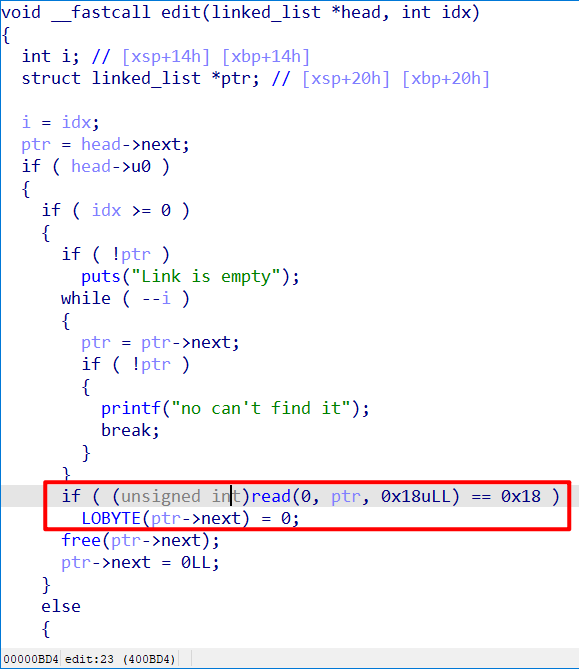
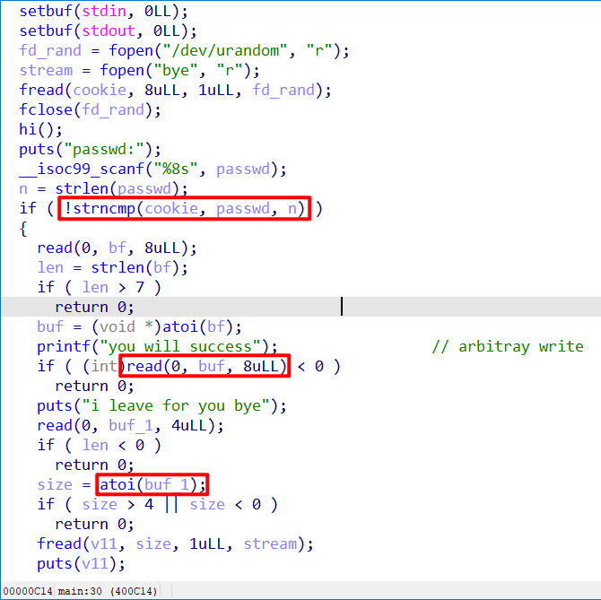
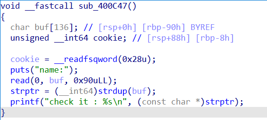
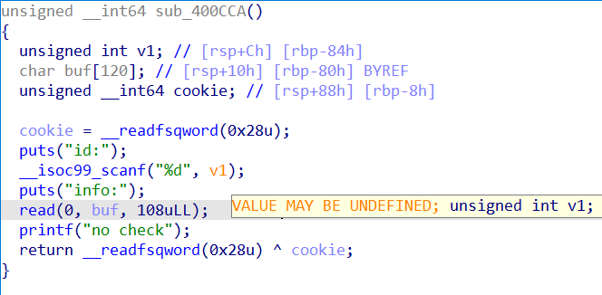
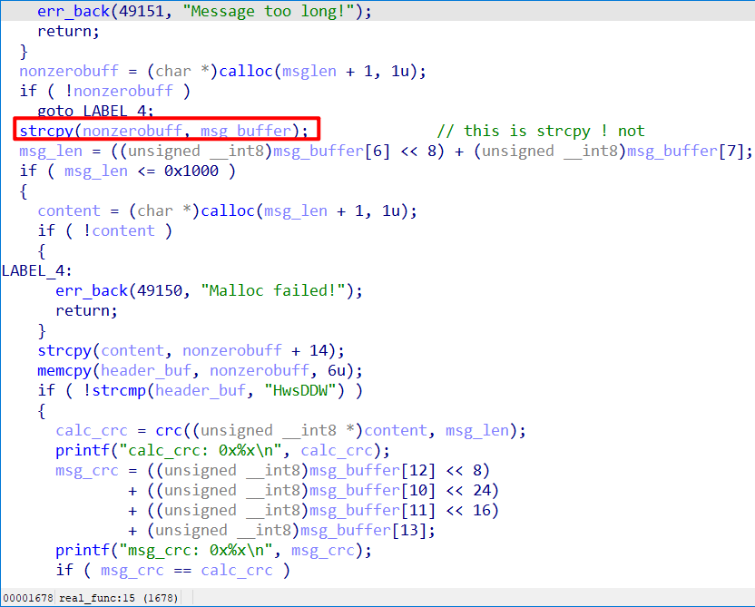
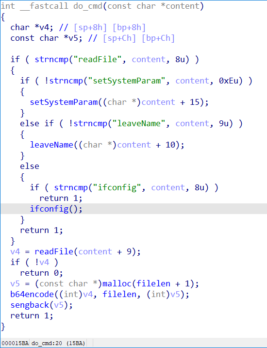
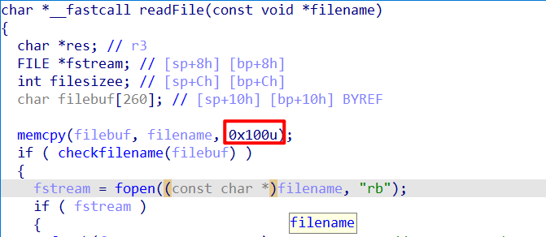

HWS计划2021硬件安全冬令营线上选拔赛，有很多IoT的题和kernel的题，很多题没来的及做，把做出来的几道题记录一下
趁着这次机会用上了传闻已久的IDA 7.5嘻嘻
Pwn
ememarm
arm64，libc版本Ubuntu GLIBC 2.27-3ubuntu1，edit函数会在free之前把最低字节置成0，这样可以把一个可控的chunk提前free进tcache。因为是堆题，花了一天的时间研究怎么在gdb-mutliarch连上之后用heap、bins这些命令，无果，问了学弟他说他做这种别的架构的堆题从来不用插件的命令，就自己看。后来然后就没研究了，自己看也没有特别麻烦。

进了tcache后改fd指向got，劫持free的got表项至system，got表的数据如下。因为是qemu，我这次比赛自己测试后的结论是：同样的qemu运行在不同机器上偏移是不同的，但是在同一台机器上两次运行的偏移是一样的，也就是堆栈什么的都没有随机化。如果有知道为什么的师傅请告诉我。XD
1 | 0x412000: 0x00000040008ae308 0x00000040008ba128 |
exp
1 |
|
emarm
arm64，验证密码的时候用了strncmp，密码填1绕过的概率是 1/256，这里需要爆破。进入之后给了一个低地址的任意地址写，正好可以写got表，劫持atoi的got表到system。执行atoi的时候输入长度只有4字节，没法给/bin/sh，但是给sh就可。

exp
1 | #!/usr/bin/python |
justcode
菜单给了两个选项，一个任何地址写，一个可以泄露栈cookie。

这里用read将用户输入读到栈上最后没加\x00，选择好偏移就可以leak出libc的地址，libc基址get。
这个函数还有一点是它read的长度，正好能够覆盖栈canary。因为栈canary最地位永远是\x00，所以可以把cananry也leak了。

这里ida非常牛逼的把v1表注了未初始化，这里在之前控制好栈上原有的内容之后可以任意地址写。
我的选择是首先写exit的got，让main函数可以不断重复（次数不够）。然后写__stack_chk_fail的got，之后leak stack canary。然后改fgets的got到gets，造成栈溢出。
之后就是x86架构溢出后的rop了。因为开了seccomp，所以就在libc段rop，执行open-read-write。
exp
1 | #!/usr/bin/python |
ppc
静态链接的ppc binary，第一次接触ppc，在这里学了基础的ppc汇编。
下了ppc的交叉编译链编译了个helloword对照着看。
我一开始看checksec的输出说Has RWX segments，但是gdb调的时候没有发现可写可执行的段，以为这个是checksec弄错了。
整个程序就一个栈溢出，我就想是ppc的rop？但是这种架构想要rop比x86要难很多，gadget的条件很苛刻，要同时使用mtlr指令修改r0寄存器后再调blr才能把链条延续下去。
然后我就抱着试一试的心理尝试了一下直接跳到globalbuffer上去执行一下，然后我吃惊地发现是可以执行的……
这样的话，这题就是写ppc shellcode的题了。学习了久仰大名的keystone的编译框架。shellcode挺简单的，直接调的是execve("/bin/sh",0,0)
1 | from keystone import * |
然后，我执行了，发现我的shellcode有0字节。在strcpy的时候被截断了。
照理来说这里我应该想怎么优化我的shellcode的，我又抱着试一下的心态跳到栈上去看看栈能不能执行。然后我惊讶的发现，栈是可以执行的……
打远程的时候需要通过报错得到远程qemu执行起来栈的地址。类似这样
1 | Invalid instruction NIP f6fffac0 LR f6fffabc CTR 1000de00 XER 00000000 CPU#0 MSR 00006040 HID0 00000000 HF 00006000 idx 0 TB 00216151 928362571951018 GPR00 00000000f6fffabc 00000000f6fffbf0 00000000100bb4d0 0000000000000000 GPR04 00000000100a01a7 0000000000000001 00000000100a01a7 0000000000000001 |
exp
1 | #!/usr/bin/python |
IoT
easymsg
arm32的题，多线程起了一个server。主要的工作就是逆向，看它收到报文后的逻辑是怎么样的。

报文的格式挺简单的，有头、crc校验、长度、报文什么的。这里比较坑的一点是长度字段有两字节，长度要到0x100以上，不然有\x00会在strcpy的时候截断orz。
然后这题还是开了PIE的，我研究了半天PIE的话我怎么下断点？gdb刚连上的时候代码段都没加载。我问了学长，他说就一步步跟呗……
最后我通过使用search -x 命令搜索snrpintf plt表的头几个字节来定位的代码段，顺便还发现使用sigint可以中断gdb server。
逆向完报文格式进来之后又是很好玩的几个选项。

有readfile来读文件，不过有些许限制；有ifconfig来查看ifconfig的输出；有setSystemParam，实际上是个用户认证函数；有leaveName，leaveName存在一个命令注入。
比较坑的一点是flag不在当前目录。

checkfile之前有一个操作是memcpy，但是只复制了前0x100字节，这个好像是我偶然间发现的……因为我同一个文件名用/加长不同长度有一次成功了，有一次没成功，就多看了一眼，发现居然还有这个问题。那相当于是这个check是完全可以绕过了。
有师傅说从config.dat文件可以得到用户名和密码，那个文件我完全不知道是干啥用的，还是二进制的，就没管。
我是先用readfile读了当前目录的shadow文件，里面有用户名和密码，然后去认证、进行命令注入，通过命令注入一点点探测服务器是什么情况。
放一点当时命令注入得到的一些服务器上的信息。
根目录 ls -la /
1 | total 84 |
/etc/passwd 文件 cat /etc/passwd
1 | root:x:0:0:root:/root:/bin/bash |
当前目录下的shadow文件 cat /home/messageBox/shadow1
admin:alexandr1s
可以看到flag其实是根目录下的/flagG1zjin，权限是只有root可读，直到比赛快结束了我才意识到这一点，就是我就是root……
直接readfile读/flagG1zjin就可
exp
1 | #!/usr/bin/python |